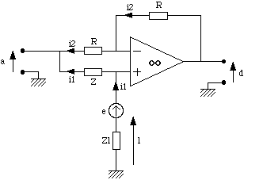
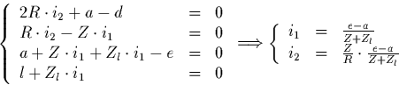
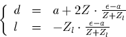
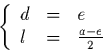

Next:
B Codage de Hamming
Up:
Comment faire son propre
Previous:
6.2 Gnral
A Le bloc de transformation 2 fils - 4 fils

Figure
A.1
: Schma du bloc T
Avec les notations de la figure
A.1
, on obtient:

D'o:

Si
Z
=
Z
l
:

Denis Arnaud
11/25/1997